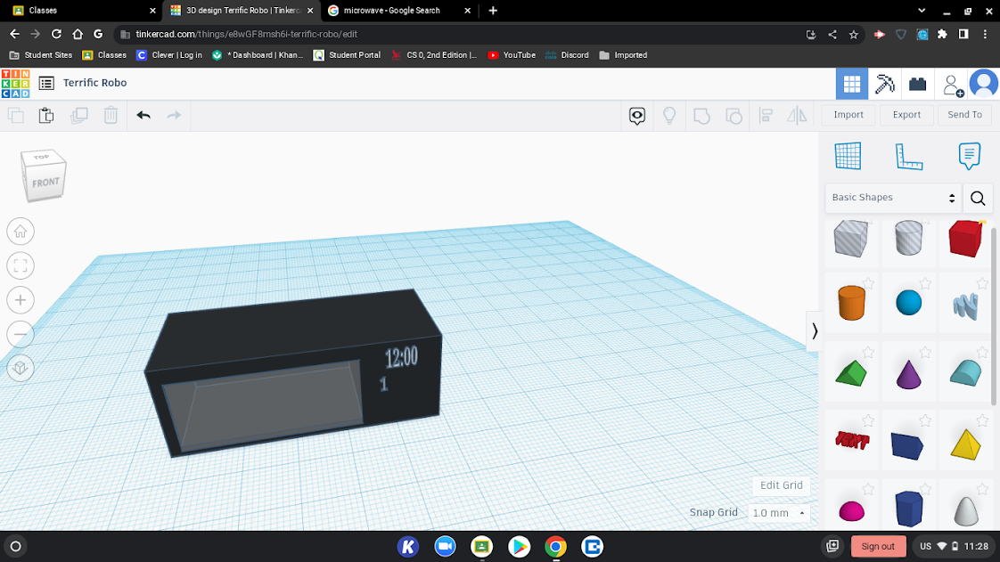
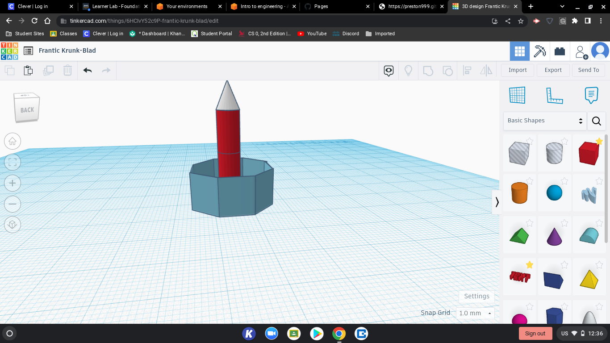
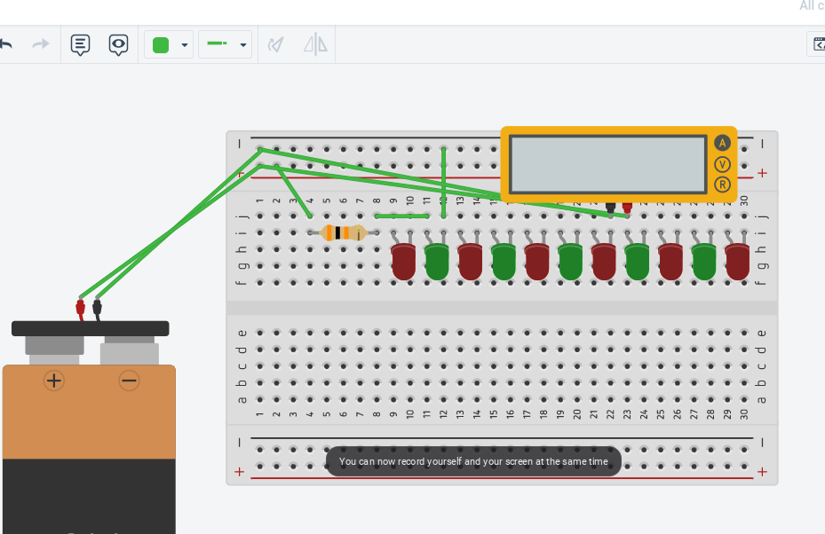
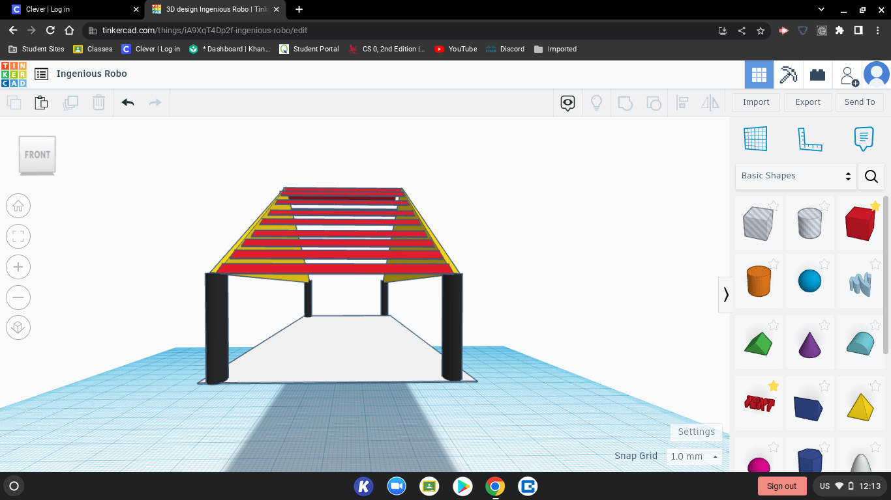

9/2 - This week we worked on a CAD challage building a kitchen appliance. I wanted to CAD a microwave due to the fact that i use it everyday.
9/16 - This week we started designing our rube goldberg project on tinkercad.
9/23 - This week we were building our rube goldberg machine.
10/3 - This week we made a tinkercad on prosthetics.
10/10 - This week we started cadding a rocket on tinkercad
10/21 - This week we launched our bottle rockets.
11/1 - This week we started to learn about electrical engineering.
11/8 - This week we started to do hands on activities
11/16 - This week we strted Arduino
11/23 - This week we didnt do anything because we had no school.
11/30 - This week we started cading our spaghetti bridge.
12/07 - This week we dessided to change our design. We have already tested twise and they went succesfull. But we want a better outcome.
12/14 - We are finishing up our final product and everything looks good.
12/21 - This is our last week and we are going to test our final roduct
01/11 - This week we started learning about buisness engineering. This is prety much just people pitching ideas and others say if its good or not. We learned about UX and UI as well.Our group also pitched an idea to the class.
01/20 - This week we made oobleck for challenge day. Oobleck is known as a non newtonian fluid which is when a fluid does not follow newtons law of vescosity. It is made from mixing cornstarch and water. When you hit it, it acts like it were solid, but when you let go it turns into liquid.
01/26 - This week we started making/designing our mouse trap car with a cad. We went with a 4 wheel design. We want our cars base to be rulers which wont have a lot of weight on it and because of that it will go faster and the wheels will work better since there wont be a lot of weight on it.
02/10 - This week we started building our mouse trap car. We were limited to supplies due to the fact that it was our first week starting the project. So pretty much our car was just like our cad, it was based on rulers and the wheels were two CD's taped together. And for challenge day we had to make a tool based from a meter stick. The point of the challenge was for a water ballon to be protected by whatever you made and the goal was to run a 100m on the track without the water ballon falling.
02/20 - Throught this week we were able to assemble a good amount of our mouse trap car. We kept on running into problems with our wheels not being still and moving around. But the base we made out of rulers was amazing due to the fact that it was very strong and that it supported a lot of weight.
02/25 - This week We finished up our car and we were confident that it would do well but we dudnt realize that the hot glue did not melt right and it blocked our wheels from spinning.
03/03 - This week we touched up the car a little and we re-did the hot glue because it was stoping our wheels from moving. We also had some issues with the string but we clutched up and we were able to finish on time. When we tested our car we didnt go to far but i was still happing that it went.
03/24 - This week we came back from spring break and we did an egg drop challenge. We designed a box with an inner cotton padding and a balloon that would help it glide down so that an egg could be placed inside and stay intact after falling two stories.
03/31 - This week we started to build our contraction and by friday we tested. Our drop was succesful and we were very happy that our design worked.
04/06 - This week we started our final project which was to make a life sized boat for 2 people to fit in. The goal is to go from one side of the pool to the other and back without sinking. Our group wanted to go with a kayak type of disign due to the fact that it has more balance and sustainability, and we were givin the opertunity to use paddles but im pretty sure that were not going to because it will trow off the balance and the boat will tip over.
04/14 - This week we measured the length and width of our group members who are going to go in the boat. While doing that we realized that our boat would have to support 250 pounds which a kayak made out of cardboard cannot do. So we went with a different design based off of joshua's preference. We are going to make a boat that is a box shape with a triangle on one side.
04/22 - during the week we pretty much just messuared and cut out a bunch of peices of cardboard and we got to tape down the base of our boat. Since we have 2 pretty big people going in the boat we desided to make a big base so they can fit and we are thinking about double layering the base so it can be able to hold both of them.
04/29 - This week we taped a bunch of the peices together and did not do the double layering because we thought that it would take up a lot of tape. And when we got our boat out of the robotics room it was pretty scuffed. The tape was coming off and it just did not look like a boat. So we kinda had to retape a bunch of little things but it was worth it because we found flaws in our boat.
05/06 - During the week we taped on the sides of our boat, which was giving problems because it was at a awkward angle and taping was definitly the hardest aspect of building the boat. Our whole porpose was to build a boat revolving around balance and support.
05/13 - This week we were pretty much done and i would say we did a good job. Unlike other groups our boat was kind-of basic but im sure we will do better than them when we test because there boats are very light, and they didnt go off of support but off of design.
05/21 - This week we just chilled and talked about soccer because we were done and we were waiting for the test day.
05/31 - today we tested our boat and it did not go as i planned. We made it almost half way through the pool but we only got 1 person on the boat due to the give off the boat gave when Alex got on. Some things that i am reflecting on right now is the double layering that we were going to do but didnt. Im sure if we did the double layering we would have made it a lot farther. And if we had more tape i would have definitly taped the bottom of our boat, the reason for is because the tape would stop the water from soaking into the bottom of the boat. And it would have made the boat itself more balanced because the boats weight to the groupmates weight would have almost been equal.
linkThis link will take you to a video of our rube goldberg and what we did. Our design was to drop the baseball into the cup and the cup would hit the car and push it down. Once the car is pushed down it will pop the ballon with the needle taped on to the car.
This is a picture of a duck with a prosthetic. I made this on tinkercad. The reason i made this was because i wanted to pick an animal that the whole class wasnt doing. In my opinion i liked this challenge a lot because it was a change from the rest of them and it was kinda fun to do.
Today we did a challenge day and we were told to build any kitchen applience. I choose to make a microwave becuase i use the microwave everyday. And i wanted to see if i could make a transparent whole in the middle to see the inside of the microwave. Unfortunatly i was not able.
For our new challenge our group was told to cad a design of a rocket fuled by water pressure. Everyone in the group made a cad but it wasnt that good, so we picked tristans because he had the best consept and reasoning to his design.
linkThis is the link to see our bottle rocket launch and get first place. We got kinda lucky because our rocket launched directly down but since there was so much pressure it went flying and got the farthest length.
This is a curcuit i designed on tinkecad. This was very hard in my opinion because im not to good with things like this. But if i knew what i was doing i would have really enjoyed it because it looks fun and i kinda want to learn more about it.
This is a picture of our bread board. This was by far the hardest challenge we have had to do. Without tristan we would have never been able to complete this without asking for help every 5 min.
 For challenge day we were told to make a bridge and each group member was supposed to make a cad. I have had history with this because i did it in 8th grade so we went with my cad. The rest of the groups cad was not good anyway so we just stuck with mine.
So this mouse trap car was hard to make but we were still able to get an iteration. One problem we kept running into was the wheels turning away as you can see in the picture above. We probably could have done a better job with the wheels and hot glueing them.